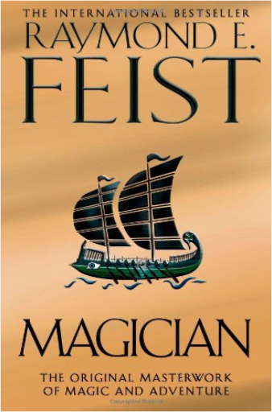
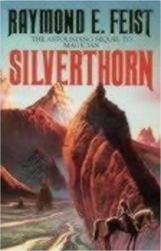
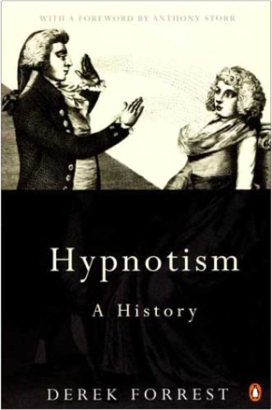

Darkness at SethanonRaymond E Feist  An evil wind blows through Midkemia. Dark legions have risen up to crush the Kingdom of the Isles and enslave it to dire magics. The final battle between Order and Chaos is abotu to begin in the ruins of the city called Sethanon.  MagicianRaymond E Feist Raymond E. Feist's classic fantasy epic, Magician, has enchanted readers for over twenty years. The revised edition was prepared to celebrate the tenth anniversary of its publication, and incorporates over 15,000 words of text omitted from previous editions. At Crydee, a frontier outpost in the tranquil Kingdom of the Isles, an orphan boy, Pug, is apprenticed to a master magician — and the destinies of two worlds are changed forever. Suddenly the peace of the Kingdom is destroyed as mysterious alien invaders swarm the land. Pug is swept up into the conflict but for him and his warrior friend, Tomas, an odyssey into the unknown has only just begun. Tomas will inherit a legacy of savage power from an ancient civilization. Pug's destiny is to lead him through a rift in the fabric of space and time to the mastery of the unimaginable powers of a strange new magic.  SilverthornRaymond E Feist This is the second volume of Raymond E. Feist's great epic of heroic fantasy. For nearly a year peace reigned the enchanted kingdom of Rillanon. But new challenges awaited Arutha the Prince of Krondor when Jimmy The Hand - youngest thief in the Guild of Mockers - came upon a sinister Nighthawk poised to assassinate him. What evil power raises the dead and makes corpses do battle with the living at the behest of the Guild of Death? And what high magic can defeat it? The new King of Midkemia is threatened - and a life-or-death quest must be undertaken for an antidote to a poison that fells a beautiful Princess on her wedding day! "The best new fantasy concept in years! Has a chance of putting its author firmly on the throne next to Tolkein - and keeping him there" - "Dragon". "Epic scope! vivid imagination!a significant contribution to the growth of the field of fantasy" - "Washington Post".  The second instalment of The Riftwar Legacy, Assassins reveals Feist at his storytelling best. There is intrigue, humour and breakneck action aplenty here from the undisputed master of epic fantasy. Fresh back from the front, another foe defeated, Prince Arutha arrives to find all is not well in Krondor. A series of apparently random murders has brought an eerie quiet to the city. Where normally the streets are bustling with merchants and tricksters, good life and night life, now there seems to be a self-imposed curfew at sundown. Mutilated bodies have been turning up in the sewers, the Mockers' demense. The Thieves' Guild has been decimated - men, women, children, it matters not. The head of the Mockers is missing, presumed dead. Those few who survived the terrible attacks are lying low. Very low. The Crawler, it seems, is back in town. And he's being helped by others, more ruthless than he. Can it be the Nighthawks again? The Prince enlists his loyal Squire James to find out. If anyone can unravel what's happening in the bowels of Krondor, he can. He knows the sewers like the back of his hand. Afterall, as Jimmy the Hand, he grew up there. Meanwhile, the retinue of the Duke of Olasko has arrived suddenly at the palace, a week ahead of schedule but with no apologies and many demands. They say they are here to hunt. But to hunt what. Pug's son William, on his first posting as a knight-lieutenant, must escort them into the wilds. It should have been a straightforward mission... Development Across the Life SpanRobert S. Feldman This chronologically organized book provides readers with a broad overview of the field of human development–from the moment of conception through death–focusing on physical, cognitive, and social and personality development. Appealing to individuals with a myriad of different backgrounds and future goals, this book offers the most current, balanced coverage of theory and research. A wide variety of chapter topics includes gene therapy; brain development, post-partum depression; child care effects; home schooling; cognitive developments, stability of personality; cultural approaches to development, and attitudes toward aging and length of life. For a better understanding of the experiences of life and development of humans. Vegetarian PastaValerie Ferguson Discover an exciting new world of ingredients that can be teamed with pasta and noodles with this tempting collection of more than 140 recipes. | The Feynman Lectures on Physics, The Definitive Edition Volume 2Richard P. Feynman, Robert B. Leighton, Matthew Sands This revised edition of Feynman’s legendary lectures includes extensive corrections Feynman and his colleagues received and Caltech approved, making this the definitive edition of The Feynman Lectures on Physics. For all readers interested in physics. The Feynman Lectures on Physics, The Definitive Edition Volume 3Richard P. Feynman, Robert B. Leighton, Matthew Sands This revised edition of Feynman’s legendary lectures includes extensive corrections Feynman and his colleagues received and Caltech approved, making this the definitive edition of The Feynman Lectures on Physics. For all readers interested in physics. The Feynman Lectures on Physics, Vol. 1: Mainly Mechanics, Radiation, and HeatRichard P. Feynman, Robert B. Leighton, Matthew Sands This revised edition of Feynman’s legendary lectures includes extensive corrections Feynman and his colleagues received and Caltech approved, making this the definitive edition of The Feynman Lectures on Physics. For all readers interested in physics. Feynman's Tips on Physics: A Problem-Solving Supplement to the Feynman Lectures on PhysicsRichard P. Feynman, Michael A. Gottlieb, Ralph Leighton This new volume contains four previously unpublished lectures that Feynman gave to students preparing for exams. With characteristic flair, insight and humor, Feynman discusses topics students struggle with and offers valuable tips on solving physics problems. An illuminating memoir by Matthew Sands — who originally conceived The Feynman Lectures on Physics — gives a fascinating insight into the history of Feynman’s lecture series and the books that followed. This book is rounded off by relevant exercises and answers by R. B. Leighton and R. E. Vogt, originally developed to accompany the Lectures on Physics.  Hypnotism: A HistoryDerek Forrest This work traces the history of hypnotism from its beginnings as "animal magnetism". It begins with a detailed description of Anton Mesmer's 1774 discovery and recounts the story of his life. The major alterations in Mesmer's theory made by a variety of early pioneers, including the supposed paranormal powers possessed by somnambulists, are then examined, with a fuller account of the tragedy of John Elliotson than has appeared elsewhere. James Braid's coining of the term "hypnotism" to replace "animal magnetism" introduces the modern era, and after an appreciation of Braid's work the dramatic demonstrations in Charcot's Clinic are described, with the subsequent exposure of his errors by Bernheim and others. The book concludes with an account of the therapeutic and experiment work of the 20th century and the practical ways in which hypnotism is being employed today. |

Doddridge Library
Collection Total:
417 Items
417 Items
Last Updated:
Apr 21, 2020
Apr 21, 2020
 Made with Delicious Library
Made with Delicious Library